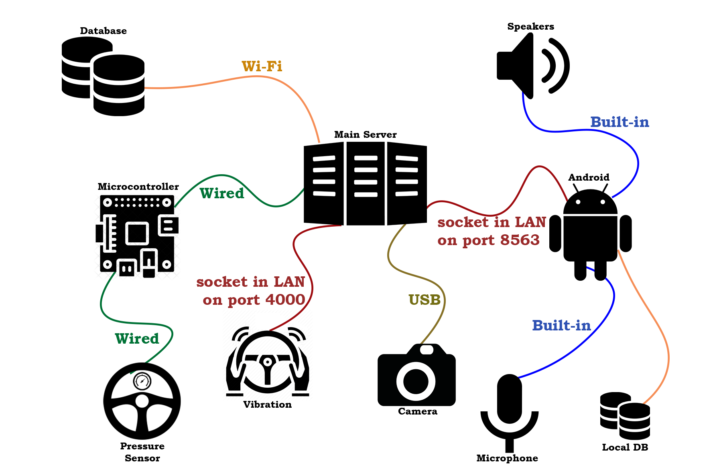

One out of five car accidents is caused by the so-called "sleep strokes":
this kind of events presents a high risk of mortality because the sleepy driver's
lack of activity makes him/her not aware of the imminent danger.
Among the main causes of this physiological condition are: to have slept less than five hours per night,
to have driven for too long, to have a very busy and stressful life or simply to have eaten heavily.
Keep Me Awake tries to reduce as much as possible this kind of dangerous drawbacks
by analyzing the condition of the driver and by taking other precautions
ensuring that the user is constantly kept under control.
When a decrease in the driver’s attention span is detected, the system reacts by restoring
it through sound and vibrational stimulations in order to awake him/her.
Thus, the system offers questionnaires and interesting conversations for the driver in order
to keep him active and conscious, and suggests that he stops and rests, when it's necessary.
Keep Me Awake has been designed to be used in cars in order to increase road safety.
Keep Me Awake is:
It can understand when your attention span is going down.
In order to keep the driver awake, it is able to change the environment through sound and vibrational inputs.
It is able to understand when to act and to handle conversation based on your preferences.
It performs face analysis.
 |
Sensing |
Keep Me Awake detects the pressure applied to the steering wheel and recognizes signs of tiredness and exhaustion on the face.
 |
Reasoning |
This system is able to recognize all potentially dangerous situations by deciding, depending on the context, whether it is necessary to intervene by taking actions in order to safeguard the driver.
Acting |
The system, in order to restore the driver's attention span, makes the seat vibrate and uses sound stimulations.
 |
Interacting |
Keep Me Awake also becomes a company tool able to ask questions and entertain the driver with conversations of his interest. The user will have to interact with the system through his voice because we don't want him to get distracted from driving!
Keep Me Awake wants to reduce as much as possible the accidents caused
by the so-called "sleep strokes".
This is possible thanks to the continuous monitoring of the driver's
attention threshold: the pressure applied to the steering wheel will be
periodically monitored with the help of a specific cover that integrates
the needed sensors.
In addition, a camera will be included to provide an additional level
of accuracy: this will detect signs of tiredness and exhaustion on the
driver or, in extreme cases, the closing of his eyes using software
that performs facial recognition.
In order to act promptly and restore the attention span of the driver,
sound and vibration stimulations will be generated.
The system, with which it is possible to interact effectively with
the help of Google Speech API, will have conversations with the driver
with the aim of keeping him active and alert.
| Priority | Description |
|---|---|
| 1 | Driver's face analysis through a camera to detect eye closure. |
| 1 | Sensing steering wheel pressure to analyse user concentration. |
| 2 | Analysis of driver's response to system's questions (in terms of timing) |
| Priority | Description |
|---|---|
| 1 | Vibration of the steering wheel in order to keep the driver awake and focused. |
| 1 | Sonorous stimulation thanks to an alarm (or a song database). |
| Priority | Description |
|---|---|
| 1 | System vocal interaction. |
| 1 | Generation of targeted conversations. |
| 2 | Different databases integration like Trivia (to have a conversation). |
| 2 | Updates about news, meteo, sport, tv, etc... (the user will choose basing on his own interests). |
| 3 | Suggestion of the nearest place to rest. |
| 3 | Music Player. |
| Priority | Description |
|---|---|
| 2 | Driver's profile manager (chosen when starting the car). |
| 3 | Initial configuration* that detect user's interests** about music, news, etc...
*una tantum |

|  |

ID 236687
HW/SW developer
 VittorioPellittieri
VittorioPellittieri
 s236687@studenti.polito.it
s236687@studenti.polito.it
ID 235972
HW/SW developer
 Gano97
Gano97
 s235972@studenti.polito.it
s235972@studenti.polito.it
ID 234061
HW/SW developer
 alericciuto
alericciuto
 s234061@studenti.polito.it
s234061@studenti.polito.it
ID 233813
HW/SW developer
 MonicaRungi
MonicaRungi
 s233813@studenti.polito.it
s233813@studenti.polito.it